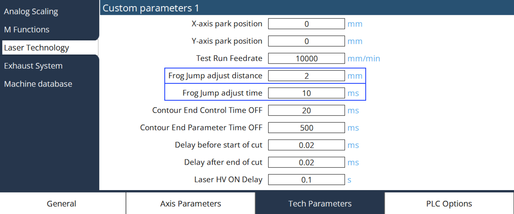

蛙跳
通常，切割完成后，首先移动Z轴至退回位置，然后将X和Y轴定位到下一个操作点。
启用蛙跳后，Z轴开始移动到退回位置，同时X和Y轴也开始移动。如果Z轴未达到退回位置，但X和Y轴将完成目标位置， 则Z轴退回运动将被中止并激活远离位置。 由此，X、Y和Z轴位置已准备好进行下一次操作。通过这种方式， 加工时间得到改善。
要调整蛙跳的距离和时间，请导航到 机床设置 → 工艺参数 → 激光工艺。

蛙跳调整距离
这是程序中轮廓之间的调整距离，以 mm为单位，从而开始将切割头定位到下一点。例如：P763 = 4 mm， 轮廓之间距离为10 mm，则当切割在当前轮廓中完成时，切割头上移，下个轮廓起始位置位于目标点前4 mm。如果轮廓之间的距离< 4 mm， 则将根据时间进行定位。
蛙跳调整时间
这是程序中轮廓之间的调整时间，以 ms为单位，从而开始将切割头定位到下一点。例如：P764 = 20 ms， 轮廓之间时间为100 ms，则当切割在当前轮廓中完成时，切割头上移，下个轮廓起始位置位于目标点前20 ms。
| 蛙跳以距离和时间2种模式进行调整，先到的模式将激活切割头运动。因此，基于机床动态性能， 应分配适当的值。 |